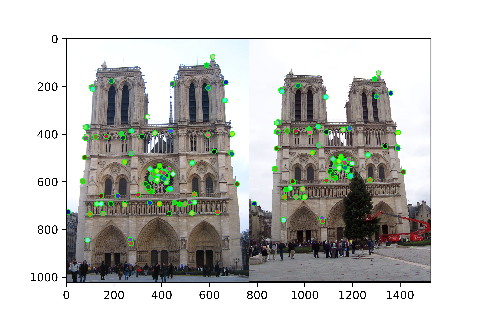
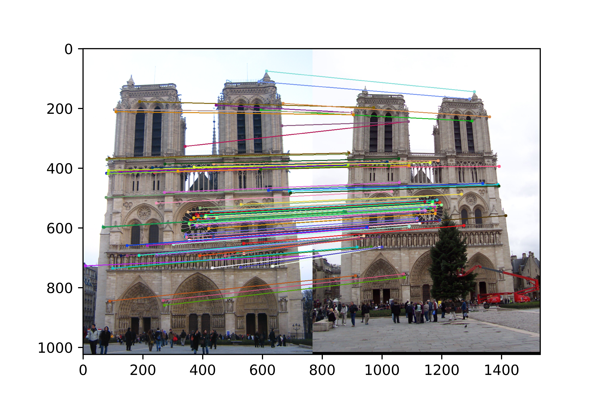
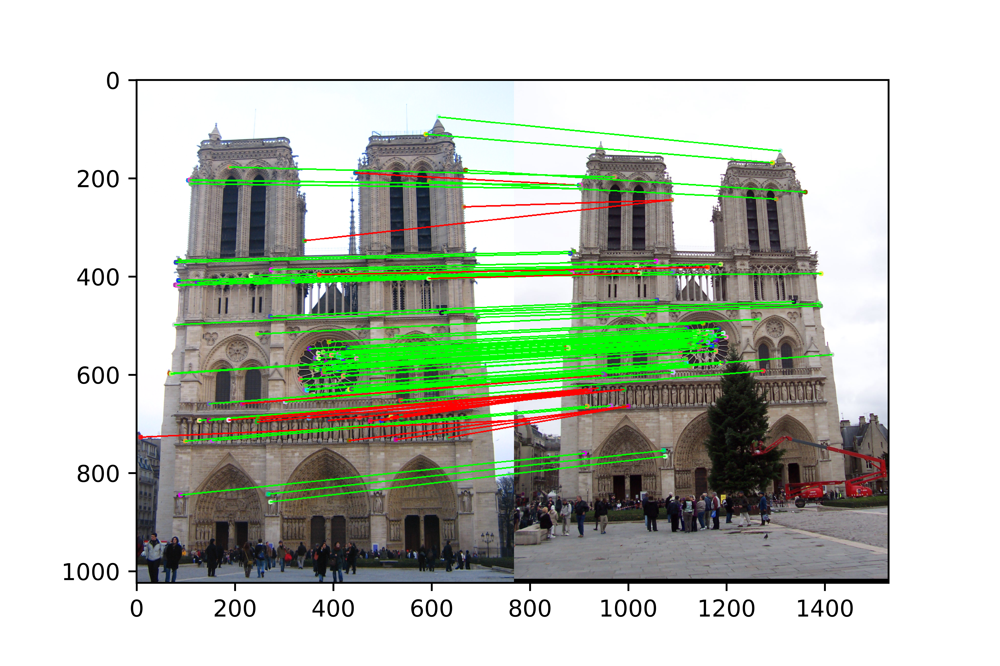

Project 2: Local Feature Matching
Fig.1. Potential points of interest, extracted from thresholded cornerness matrix.
Local feature matching and object recognition are important problems of image analysis applied across multiple fields in science. For this project we had to create a pipeline for local feature matching by implementing the following steps:
- Points of interest detection with Harris corner detector
- Keypoints extraction by applying ANMS to points obtained at step 1
- Features extraction for every keypoint using SIFT
- Two images features matching by shortest distance
- Matches extraction by confidence
Main steps description and discussion
Harris Corner Detector
For Harris Corner Detector we had to construct the cornerness matrix
ANMS
Of course points of interest, which could be considered keypoints candidates are those that have distinct features. The best way to perform such points extraction was Adaptive Non-maximal Compression or ANMS. It ensures that the keypoints chosen not only have good R values, but ensures that they don't have over keypoints around them in big enough radius for the features of the two not to intervine. The straightforward implementation was to find the least radius to the one of the closest points of interest with bigger R value for the current point, sort all the points by this radii and extract those with biggest values (most distinct ones). I have also experimented with the amount of keypoints chosen for best local feature matching performance, which turned out to be 1500 (1000 and 2000 performed poorer, giving accuracy of matching around 80% instead of 93% for 1500).
SIFT
To be able to match the keypoints of two images to each other we had extract the features with SIFT, by basically extracting the most possible information from each of the keypoints surroundings. The SIFT was executed according to Szelinski with only difference of choosing the final feature window width of 32 instead of 16, because it showed a better performance in describing keypoints and raise each element of the final feature vector to a power of 0.3 (I have tested all powers between 0.1 and 0.9 with step 0.1 and chosen 0.3 for best accuracy), leaving out the keypoint orientation invariance.
Feature Matching
The feature matching was pretty straightforward out of all, first find the closest keypoint by using feature vectors to describe the distances. Then using NNDR resorting matched features from high to low confidence levels and extracting top 100 results.
Results in a table
|    |


|


|
As it can be seen from the results table the best feature matching using the proposed pipeline can be achieved when images are:
Citations
1 David G. Lowe, "Object recognition from local scale-invariant features," International Conference on Computer Vision, Corfu, Greece (September 1999), pp. 1150-1157.
2 Szeliski, R. (2011). Computer vision algorithms and applications. London: Springer.
3 James Hays, Computer Vision CS 6476 Fall 2018 slides